L’hôpital où vous apprenez a un plan stratégique
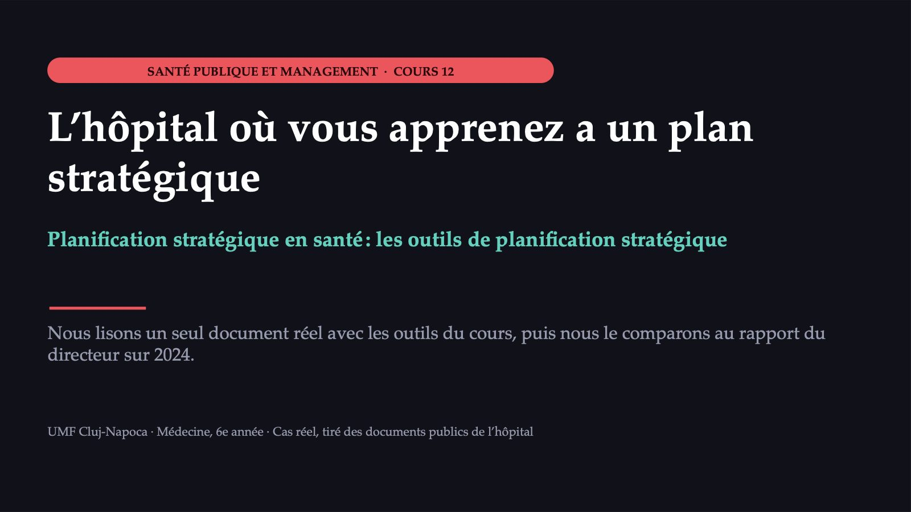
1 / 52Le SCJU Cluj-Napoca et son plan
![PREMIER ACTE · CAS RÉEL Le SCJU Cluj-Napoca et son plan L’HÔPITAL plus de 3 000 salariés, en régime pavillonnaire, dans plus de 33 bâtiments distincts LE PLAN 2016–2020 document public : introduction, priorités, évaluations, analyse SWOT et axes, en fichiers séparés sur le site de l’hôpital DANS L’ANALYSE SWOT bâtiments construits entre 1897 et 1904 ; vieillissement de la population ; instabilité législative À côté du nom de l’hôpital ne figurent que des citations et des faits tirés de ses documents.](diapozitive/C12/002.jpg) 2 / 52
2 / 52Deux plans et un rapport
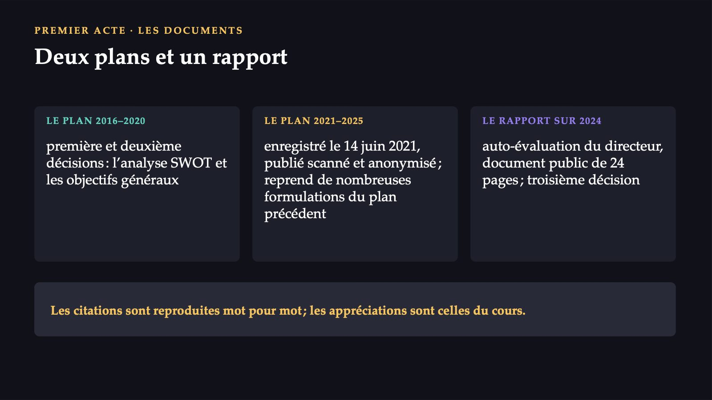
3 / 52À quoi vous répondrez aujourd’hui, sur téléphone
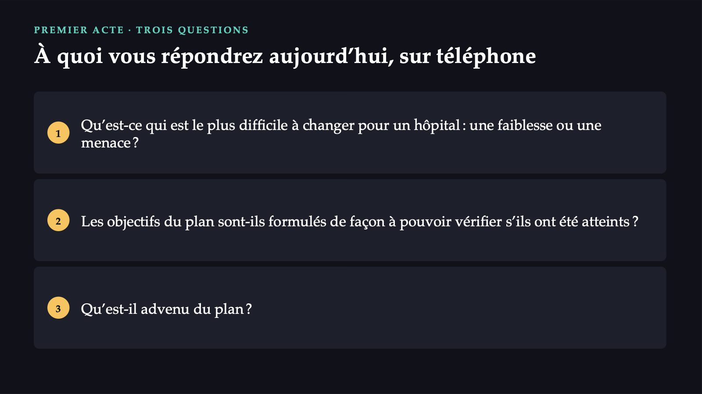
4 / 52Thème 12 : les outils de planification stratégique
![FICHE DE LA DISCIPLINE Thème 12 : les outils de planification stratégique „Planifier, mettre en œuvre et évaluer une intervention de santé publique à l’aide d’un modèle logique, d’un calendrier des activités, d’une analyse SWOT et d’un plan d’évaluation.” Fiche de la discipline, aptitude A3 THÈME 12 économie de la santé et planification stratégique, commun avec le cours d’économie de la santé COMPÉTENCE C6 expliquer les outils de planification stratégique TRAVAIL PRATIQUE 3 exercice en équipe : modèle logique, calendrier, analyse SWOT, plan d’évaluation La matrice TOWS et l’analyse PESTEL ne sont pas nommées dans la fiche ; nous les utilisons parce qu’elles aident à lire le plan.](diapozitive/C12/005.jpg) 5 / 52
5 / 52Des documents que vous rencontrerez en tant que médecins
![POURQUOI CELA VOUS CONCERNE Des documents que vous rencontrerez en tant que médecins LES DOCUMENTS le contrat de management, le plan stratégique sur plusieurs années, le plan de management et le plan opérationnel sur un an VOTRE SERVICE recevra des objectifs issus du plan ; équipements, réparations et postes y figurent ou non LA MÉTHODE un plan d’hôpital est un document de travail, non un travail scientifique ; nous apprenons à lire n’importe quel plan Ce que le plan promet, comment on saura s’il a réussi et qui en répond.](diapozitive/C12/006.jpg) 6 / 52
6 / 52Trois questions, dans cet ordre
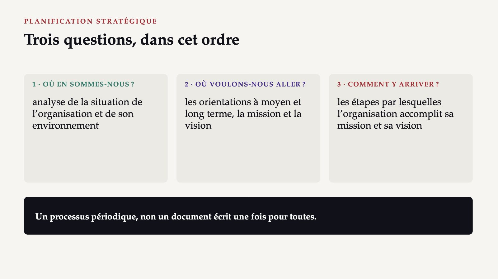
7 / 52Un cycle, non une ligne droite
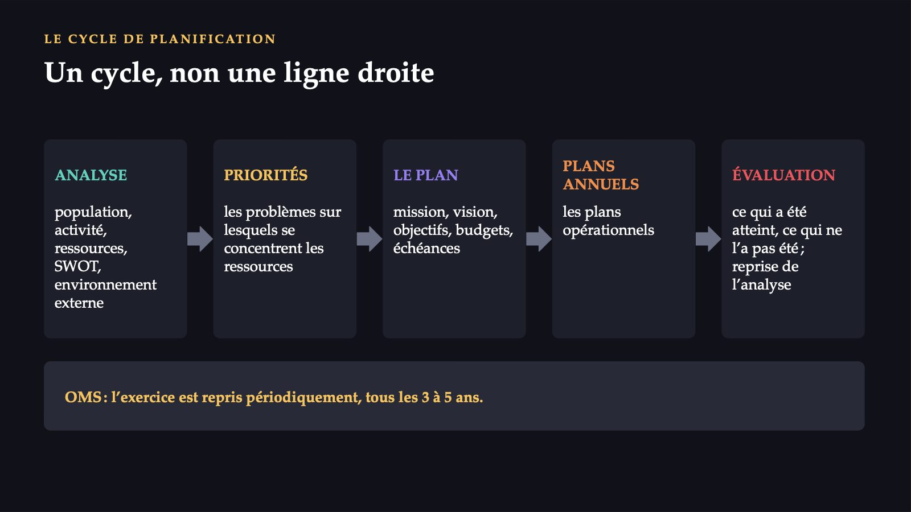
8 / 52La différence tient à l’horizon et au niveau de détail
![STRATÉGIQUE ET OPÉRATIONNEL La différence tient à l’horizon et au niveau de détail LE PLAN STRATÉGIQUE plusieurs années ; dit ce que l’organisation veut changer LE PLAN OPÉRATIONNEL en général un an ; qui fait quoi, avec quel argent et pour quand AU SCJU CLUJ-NAPOCA les deux niveaux : le rapport sur 2024 cite le « Planul operațional pentru anul 2024 » (plan opérationnel de l’année) Le niveau stratégique fixe les orientations, le niveau tactique les décline par services, le niveau opérationnel les applique au quotidien.](diapozitive/C12/009.jpg) 9 / 52
9 / 52Elles ne se mesurent pas, mais donnent le critère des objectifs
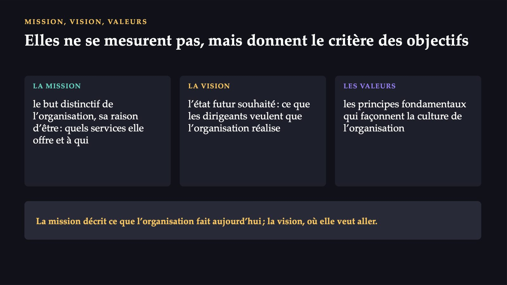
10 / 52Mission et vision du SCJU Cluj-Napoca
![PLAN 2016–2020 · CITATIONS Mission et vision du SCJU Cluj-Napoca MISSION, PREMIER POINT « Satisfaire les besoins des patients en fournissant des services médicaux performants, dans le respect des principes de base : qualité, maîtrise des coûts, satisfaction du patient et du personnel, accès aux services. » VISION, UNE DEVISE « Vers l’excellence, par la compétence, le professionnalisme et le dévouement, dans l’intérêt de l’être humain » La vision ne se juge pas selon les critères SMART ; les objectifs, si. Source : plan stratégique 2016–2020 du SCJU Cluj-Napoca, chapitre introductif (citations traduites du roumain). Le plan 2021–2025 conserve la même vision.](diapozitive/C12/011.jpg) 11 / 52
11 / 52Objectifs généraux et objectifs à moyen terme
 12 / 52
12 / 52Quatre cadrans, deux moitiés
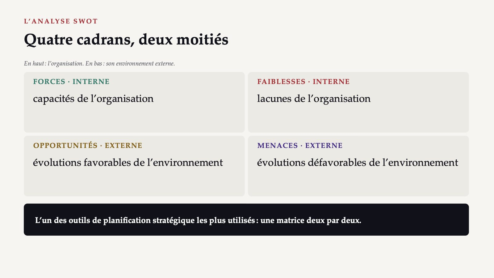
13 / 52Les quatre étapes
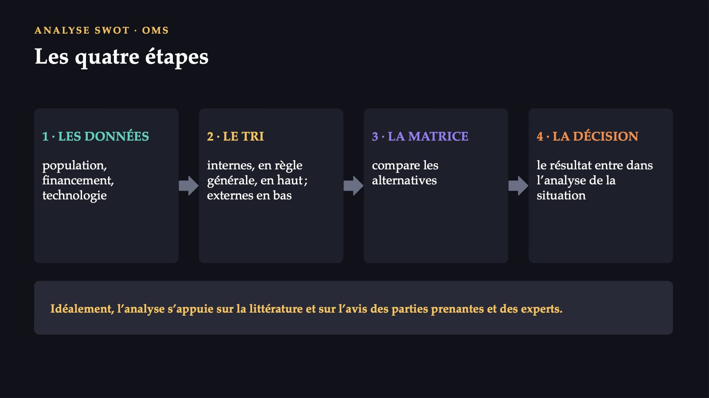
14 / 52La maîtrise, non « bien » et « mal »
![LE CRITÈRE QUI COMPTE La maîtrise, non « bien » et « mal » LA FAIBLESSE une caractéristique de l’organisation : ses bâtiments, ses appareils, ses procédures, ses personnels ; elle peut changer, avec du temps et de l’argent LA MENACE une évolution extérieure : démographie, législation, financement du système, concurrence ; l’organisation peut seulement s’y préparer « Si le directeur et le conseil d’administration avaient l’argent et la volonté nécessaires, pourraient-ils faire disparaître ce facteur ? »](diapozitive/C12/015.jpg) 15 / 52
15 / 52Ce que l’hôpital écrit sur lui-même
![PLAN 2016–2020 · ANALYSE SWOT Ce que l’hôpital écrit sur lui-même À l’écran, à côté : les trois pages du chapitre. FORCES catégorie I ; qualité certifiée ; urgences - SMURD ; tomodensitomètre, IRM, angiographe ; « cele peste 2500 de intervenții neurochirurgicale » (plus de deux mille cinq cents interventions neurochirurgicales) par an FAIBLESSES bâtiments anciens, répartis en plusieurs pavillons ; équipements dépassés ; salaires bas ; « Espace insuffisant pour la clinique de neurochirurgie » OPPORTUNITÉS subventions européennes ; programmes de santé ; partenariats avec le Conseil départemental, l’université, d’autres hôpitaux MENACES sous-financement ; migration de la population active ; instabilité législative ; concurrence des hôpitaux de la région ; « Le vieillissement de la population » Lisez le chapitre et choisissez une ligne dans chaque cadran.](diapozitive/C12/016.jpg) 16 / 52
16 / 52Qu’est-ce qui est le plus difficile à changer pour l’hôpital : une faiblesse ou une menace ?
![MENTIMETER · VOTE 1 PREMIÈRE DÉCISION Qu’est-ce qui est le plus difficile à changer pour l’hôpital : une faiblesse ou une menace ? D’après l’analyse SWOT du plan. Vote individuel, sans discussion préalable. A Une faiblesse, par exemple l’espace insuffisant pour la clinique de neurochirurgie. B Une menace, par exemple le vieillissement de la population. C Aussi difficile l’une que l’autre : toutes deux dépendent, au fond, de l’argent. Le résultat est projeté une seule fois. Répondez sur votre téléphone, au code affiché.](diapozitive/C12/017.jpg) 17 / 52
17 / 52Variante B : une menace
![PREMIÈRE DÉCISION · CE QUE DISENT LES SOURCES Variante B : une menace LE LIEU, NON LA GRAVITÉ OMS : les faiblesses proviennent, en règle générale, de facteurs internes ; les menaces, de facteurs externes LA NEUROCHIRURGIE l’hôpital peut agrandir sa clinique, avec de l’argent et du temps ; il s’y est engagé dans deux plans successifs LA DÉMOGRAPHIE l’hôpital ne peut pas arrêter le vieillissement de la population ; il peut seulement adapter ses services Le test de la maîtrise est la règle de travail de ce cours pour le classement.](diapozitive/C12/018.jpg) 18 / 52
18 / 52Pourquoi pas A, pas C
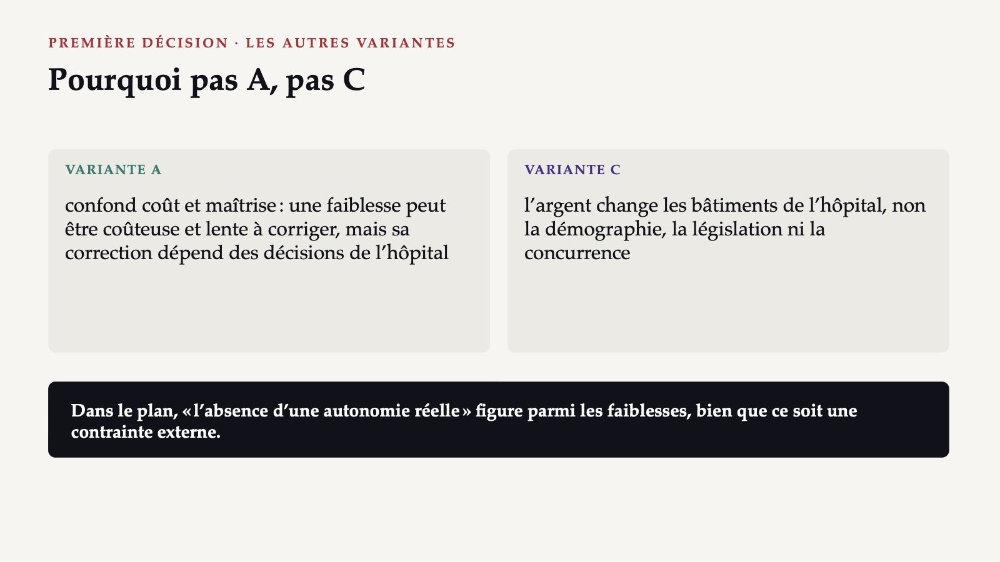
19 / 52Deux observations pour toute analyse SWOT
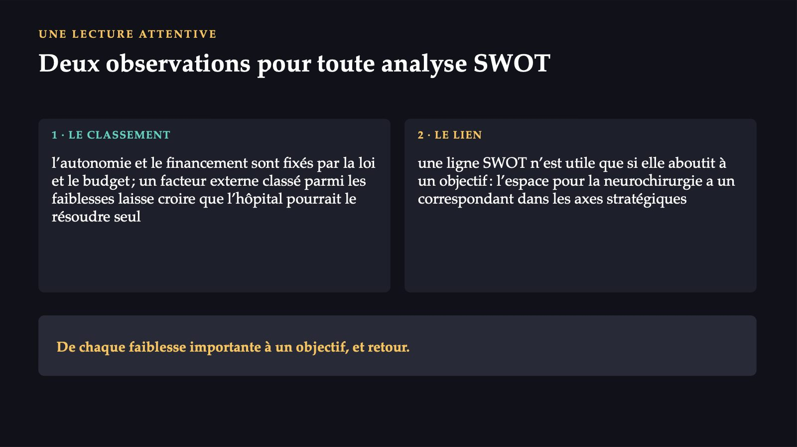
20 / 52De l’analyse aux options stratégiques
![LA MATRICE TOWS De l’analyse aux options stratégiques Décrite par H. Weihrich en 1982 ; appellations d’après l’article méthodologique de 2026. SO · CROISSANCE les forces valorisent les opportunités WO · CONSOLIDATION DES CAPACITÉS les opportunités réduisent ou compensent les faiblesses ST · DÉFENSE les forces réduisent l’effet des menaces WT · RÉDUCTION DU RISQUE on réduit les faiblesses et l’exposition en même temps L’analyse SWOT dit où se trouve l’organisation ; la matrice TOWS, ce qu’elle pourrait faire.](diapozitive/C12/021.jpg) 21 / 52
21 / 52Un exemple construit pour le cours
![LA MATRICE TOWS · SCJU CLUJ-NAPOCA Un exemple construit pour le cours FACTEUR INTERNE (PLAN) · FACTEUR EXTERNE (PLAN) · OPTION (DU COURS) SO · Les services cliniques universitaires · Les partenariats avec l’université · Des programmes communs de formation et de recherche WO · L’espace insuffisant pour la neurochirurgie · Les subventions européennes · Un projet d’extension déposé pour un financement européen ST · Les urgences - SMURD, bien équipées · La concurrence des hôpitaux départementaux · Un centre régional pour les urgences complexes WT · Des équipements dépassés · Le sous-financement du système · Le remplacement des équipements critiques, avec des contrats de maintenance La ligne WO, vous la retrouverez au troisième acte.](diapozitive/C12/022.jpg) 22 / 52
22 / 52Six catégories pour l’environnement externe
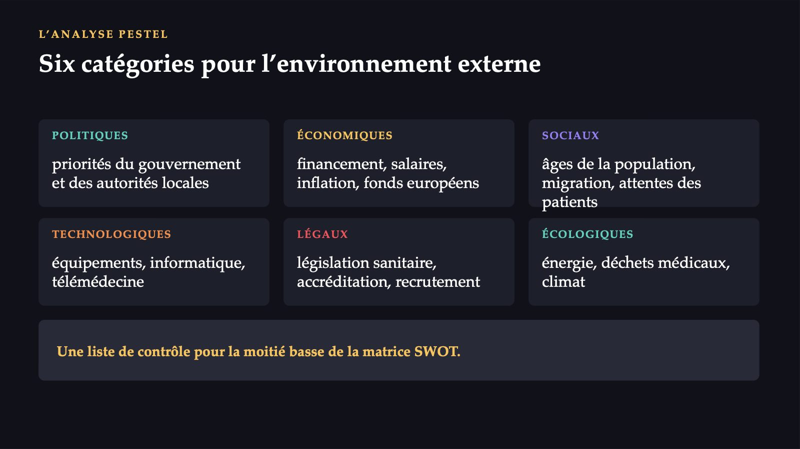
23 / 52L’environnement du SCJU Cluj-Napoca, réorganisé par le cours
![PESTEL · 2016 ET AUJOURD’HUI L’environnement du SCJU Cluj-Napoca, réorganisé par le cours PLAN 2016–2020 · DOCUMENTS ULTÉRIEURS Politique · Stratégies sanitaires incohérentes ; administrations locales · Les mêmes en 2021–2025 ; soutien des Conseils départemental et local, dans le rapport sur 2024 Économique · Sous-financement ; subventions européennes ; cas pondéré · Projets financés par le PNRR, dans le rapport sur 2024 Social · Vieillissement ; migration de la population active · Plus la pandémie de SARS-CoV-2 ; épuisement des médecins de réanimation : faiblesse, facteur interne Technologique · Équipements dépassés (faiblesse interne) · Projet PNRR pour l’infrastructure numérique Légal · Instabilité législative ; recrutement lourd sur les postes · Les mêmes menaces en 2021–2025 Écologique · Aucun facteur mentionné · Aucun facteur mentionné Le classement par catégories est celui du cours ; les facteurs viennent des analyses SWOT de l’hôpital et du rapport sur 2024.](diapozitive/C12/024.jpg) 24 / 52
24 / 52Trois choses ressortent du tableau
![CE QUE MONTRE LA COMPARAISON Trois choses ressortent du tableau 1 · CE QUI A CHANGÉ la pandémie et un cinquième objectif général en 2021–2025 ; le PNRR dans le rapport sur 2024 2 · CE QUI S’EST RÉPÉTÉ une grande partie de l’analyse SWOT 2021–2025 reprend le texte de 2016–2020, jusqu’à l’édition 2008 de la norme de qualité 3 · CE QUI MANQUE la catégorie écologique, dans les deux analyses, pour un hôpital de plus de 33 bâtiments Une analyse reprise sans mise à jour ne peut plus montrer ce qui a changé.](diapozitive/C12/025.jpg) 25 / 52
25 / 52N’importe qui doit pouvoir dire s’il a été atteint
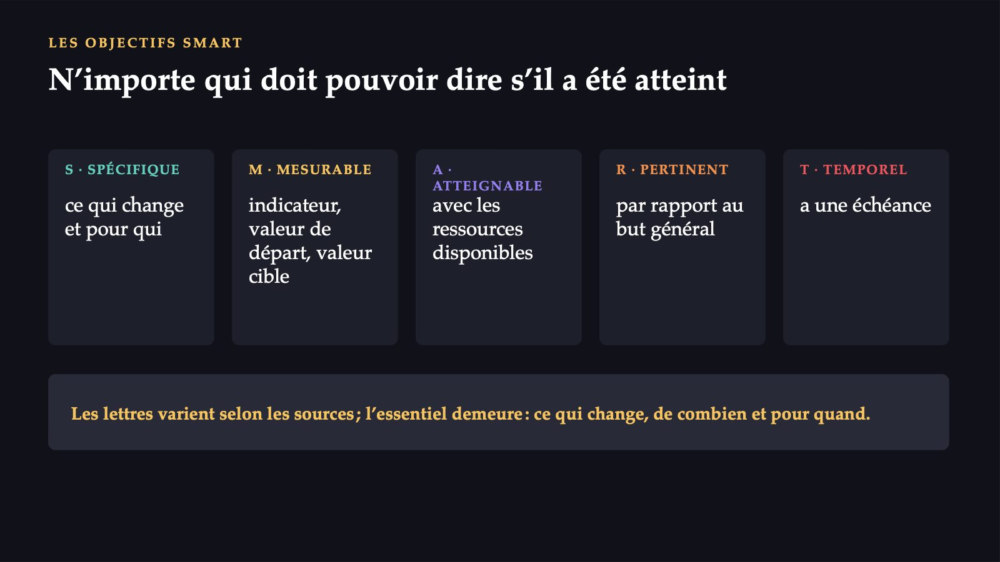
26 / 52Six questions pour chaque objectif
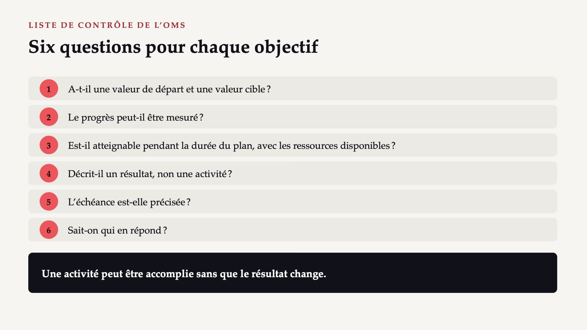
27 / 5214 553 000 lei
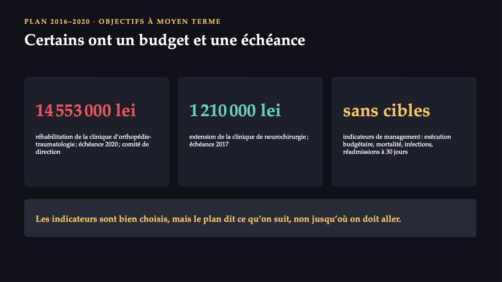
28 / 52Budget, échéance et responsable : est-ce alors SMART ?
![PIÈGE Budget, échéance et responsable : est-ce alors SMART ? CE QU’IL A l’objectif pour l’orthopédie-traumatologie a un budget, une échéance et un responsable CE QUI MANQUE le résultat : « Crearea condițiilor și circuitelor adecvate de funcționare conform standardelor de calitate specifice » (créer les conditions et les circuits de fonctionnement adéquats, conformes aux normes de qualité spécifiques) CE QUI SE VÉRIFIE l’activité (les travaux sont faits ou non), non le résultat Un objectif n’est mesurable que s’il nomme l’indicateur et la valeur cible.](diapozitive/C12/029.jpg) 29 / 52
29 / 52Un objectif général, reformulé SMART
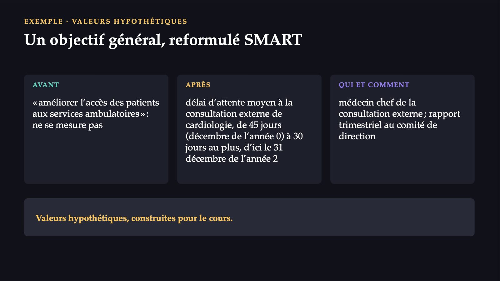
30 / 52« Obiective generale stabilite a se realiza în termen de 5 ani » (fixés pour être réalisés en cinq ans)
![PLAN 2016–2020 · OBJECTIF GÉNÉRAL 1 « Obiective generale stabilite a se realiza în termen de 5 ani » (fixés pour être réalisés en cinq ans) „Accroître le recours des patients à l’Hôpital clinique départemental d’urgence de Cluj-Napoca (adresabilitate) et sa performance, et fournir des services médicaux d’une qualité améliorée en continu.” Plan stratégique 2016–2020 du SCJU Cluj-Napoca, chapitre sur les axes stratégiques (citation traduite du roumain) Lisez l’objectif avec la liste de contrôle, puis votez.](diapozitive/C12/031.jpg) 31 / 52
31 / 52Cet objectif est-il SMART ?
![MENTIMETER · VOTE 2 DEUXIÈME DÉCISION Cet objectif est-il SMART ? Premier objectif général du plan 2016–2020, de la diapositive précédente. Vote individuel. A Oui : il est général, mais il a une échéance et porte sur la qualité. B Non, parce qu’il n’a pas d’échéance. C Non, parce qu’il ne dit pas par quel indicateur et jusqu’à quelle valeur on jugera s’il a été atteint. D On ne peut pas le dire sans connaître le budget de l’hôpital. Le résultat est projeté une seule fois. Répondez sur votre téléphone, au code affiché.](diapozitive/C12/032.jpg) 32 / 52
32 / 52Variante C : sans indicateur et sans cible
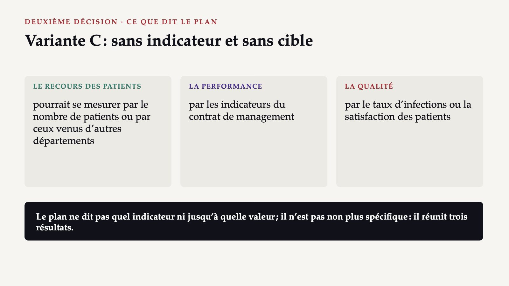
33 / 52Pourquoi pas B, D ni A
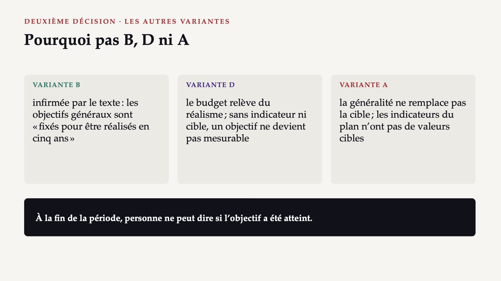
34 / 52Plus de problèmes que de ressources
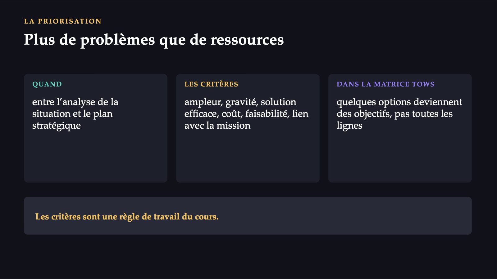
35 / 52Des objectifs aux activités
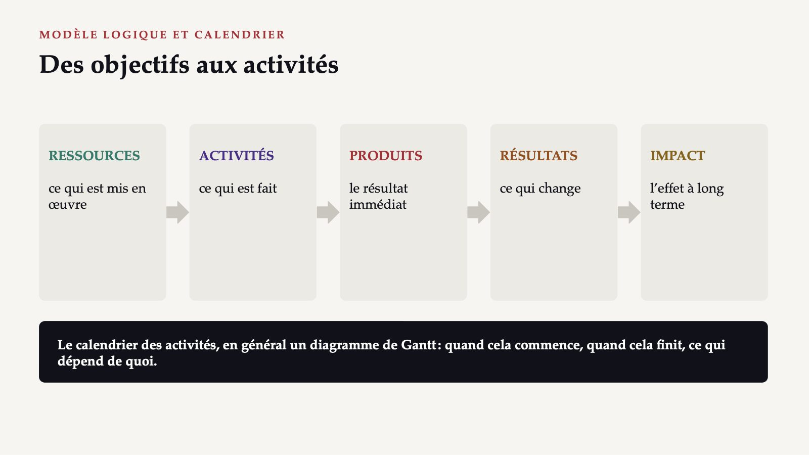
36 / 52Comment on suit un plan
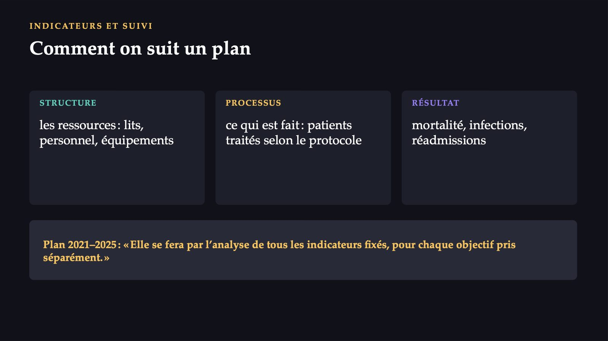
37 / 52Sept composantes
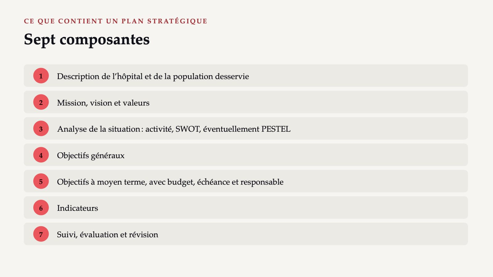
38 / 52Une promesse avec budget et échéance
 39 / 52
39 / 5253 650
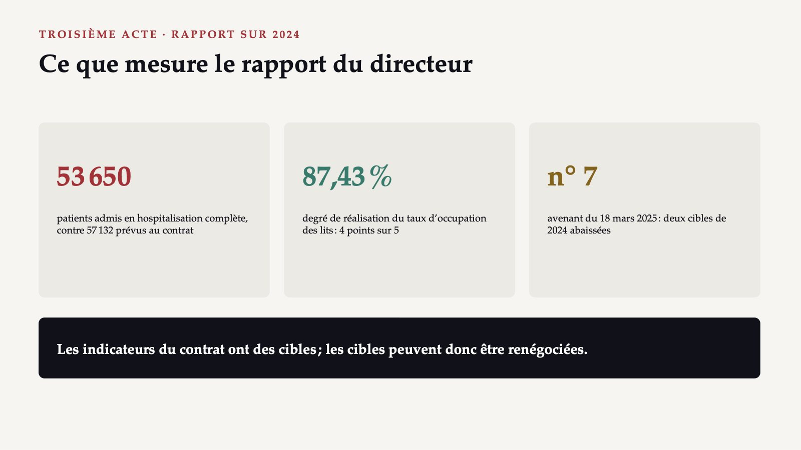
40 / 52Le même projet, dans le rapport sur 2024
![TROISIÈME ACTE · LES INVESTISSEMENTS Le même projet, dans le rapport sur 2024 LA PHRASE D’INTRODUCTION « des projets d’amélioration de l’infrastructure ont été menés, avec des financements du Conseil local, du Conseil départemental, des recettes propres de l’hôpital ainsi que du PNRR » (« au fost derulate » dans l’original) NEUROCHIRURGIE · PNRR 230 734 270,54 lei, taxe comprise ; contribution propre 11 536 713,53 lei ; l’état d’avancement n’est pas précisé GAZ MÉDICAUX marqué « projet achevé à la date indiquée » (« proiect finalizat » dans l’original) À l’écran : la page du rapport avec la liste des projets.](diapozitive/C12/041.jpg) 41 / 52
41 / 52Qu’est-il advenu du plan ?
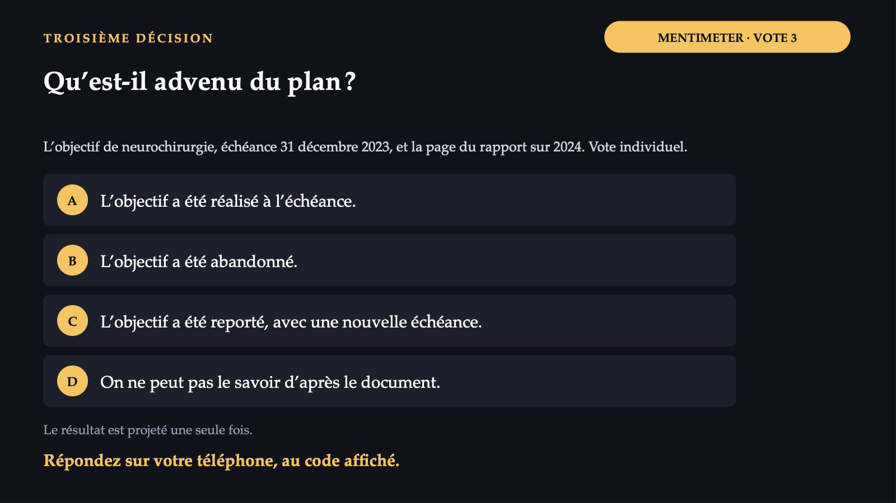
42 / 52Variante D : le document ne permet pas de le savoir
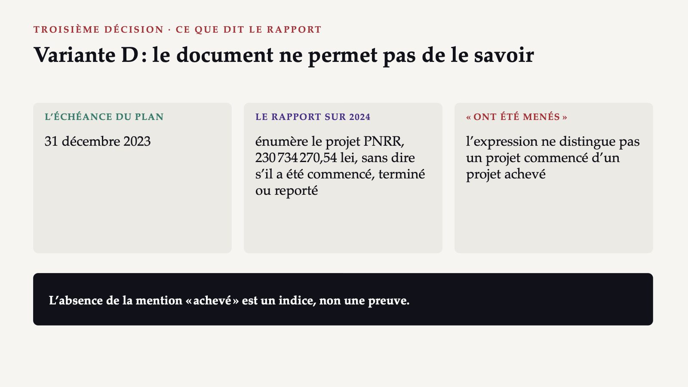
43 / 52Pourquoi pas A, B ni C
 44 / 52
44 / 52Le rapport et le plan mesurent des choses différentes
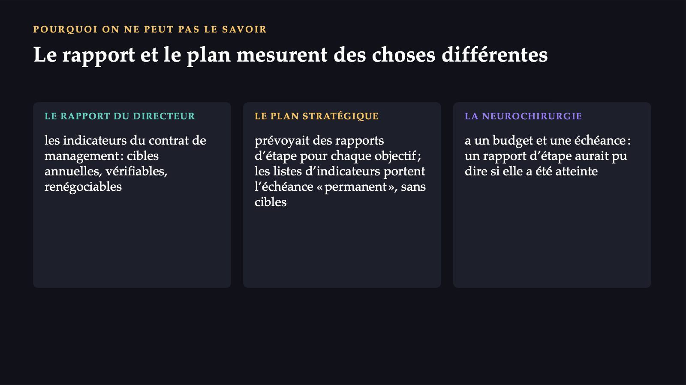
45 / 52Un plan ne se vérifie que s’il a été écrit pour cela
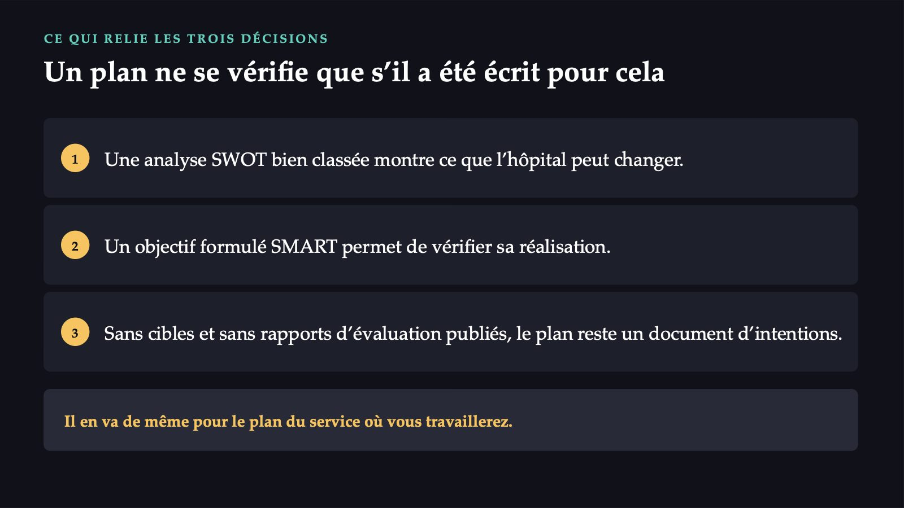
46 / 52Les limites de ce que montrent les documents
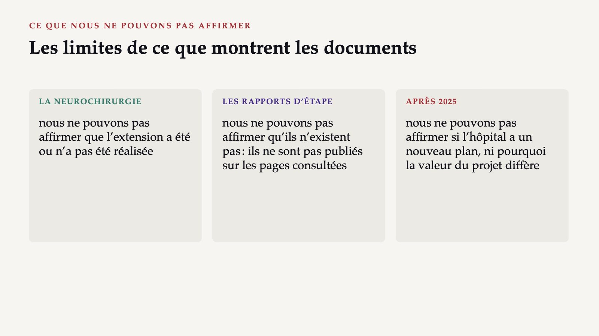
47 / 52Ce qui reste de l’heure
![RÉCAPITULATION Ce qui reste de l’heure 1 Planification stratégique : où est l’organisation, où elle veut aller, comment elle y parvient ; le plan s’applique par des plans opérationnels annuels. 2 La mission, la vision et les valeurs ne se mesurent pas, mais donnent le critère des objectifs. 3 Dans l’analyse SWOT, les facteurs internes peuvent être changés par l’organisation ; les externes, elle peut seulement les anticiper. 4 La matrice TOWS donne des options stratégiques ; l’analyse PESTEL vérifie l’environnement externe selon six catégories. 5 Un objectif n’est SMART qu’avec un indicateur, une valeur de départ, une valeur cible et une échéance.](diapozitive/C12/048.jpg) 48 / 52
48 / 52Dix affirmations, vrai ou faux
49 / 52Les réponses aux dix affirmations
![CLÉ KAHOOT Les réponses aux dix affirmations 1 V Le plan opérationnel couvre en général un an. 2 F La vision se juge d’après les critères SMART. 3 V Une faiblesse relève de l’organisation elle-même. 4 F Le vieillissement de la population est une faiblesse. 5 V La matrice TOWS transforme le SWOT en options stratégiques. 6 F L’analyse PESTEL examine l’environnement interne. 7 F Avec budget, échéance et responsable, l’objectif est SMART. 8 V Une activité peut être faite sans que le résultat change. 9 V Le rapport du directeur mesure les indicateurs du contrat. 10 F Les cibles du contrat ne peuvent pas être renégociées. V = vrai, F = faux.](diapozitive/C12/050.jpg) 50 / 52
50 / 52Ce que vous ferez autrement lundi matin
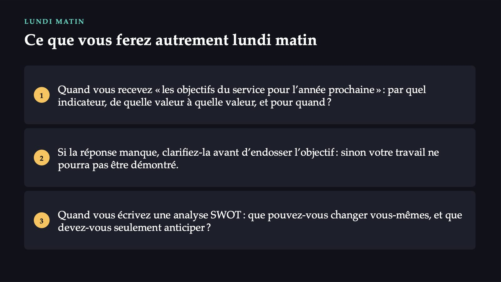
51 / 52Avant de partir
52 / 52Flèches ou espace : navigation · O : vue d’ensemble · N : notes de l’intervenant · F : plein écran · Échap : fermer